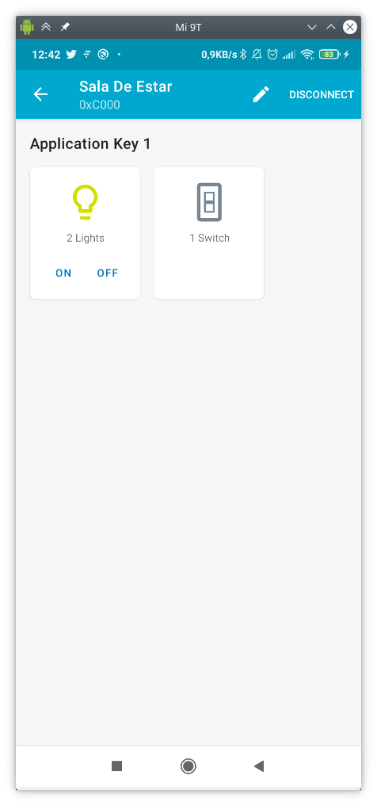

LAB7. BLE Mesh
Objetivos
-
Poner en práctica los conceptos vistos en teoría en relación a BLE Mesh, específicamente provisionamiento y modelos cliente/servidor.
-
Desplegar una infraestructura de provisionamiento de un modelo Generic OnOff Server con provisionamiento desde aplicación móvil para el control remoto de encendido/apagado de un LED.
-
Desplegar una infraestructura de provisionamiento de un modelo Generic Sensor con provisionamiento desde ESP32.
Estructura de la práctica
Esta práctica está dividida en dos partes. En la primera parte trabajaremos un ejemplo de modelo genérico OnOff en el que se simulará una red domótica con un interruptor y varias luces conectadas a una red BLE Mesh (o un sólo led RGB). Si disponemos de ellos, podemos conectar leds a los pines GPIO indicados en el fichero board.h para ver físicamente el efecto del encendido y apagado de las luces.
En la segunda parte trabajaremos un ejemplo de modelo Sensor, en el que un sensor enviará información de un sensor virtual (simulado con números aleatorios) a los clientes conectados en la red BLE Mesh.
Requisitos previos
Los códigos que estudiaremos en la práctica se encuentran en el directorio
examples/bluetooth/esp_ble_mesh/onoff_models en el caso del sistema
OnOff (primera parte de la práctica) y en
examples/bluetooth/esp_ble_mesh/sensor_models en el caso del modelo sensor (segunda parte de
la práctica).
Por otro lado, descarga e instala la aplicación nRF Mesh en tu móvil (disponible para Android e iOS).
Modelo genérico OnOff
El servidor OnOff
El servidor implementa un único elemento en el cual se integran dos modelos distintos:
- Modelo Configuration Server: obligatorio en todo nodo BLE Mesh, implementa la configuración de claves (NetKey y AppKey) así como configuraciones genéricas del servidor (suscripciones, tamaño de TTL o funcionalidad de relay de mensajes).
- Modelo Generic OnOff Server: implementa la funcionalidad básica de encendido/apagado de una luz.
El código en el fichero main.c contiene la funcionalidad básica del servidor,
que podemos resumir en:
- Inicialización de la pila BLE (bluedroid).
- Inicialización de la pila BLE Mesh.
- Registro de las funciones de callback para el proceso de provisionamiento y del modelo/modelos implementados.
- Implementación e inicialización del elemento BLE Mesh.
- Implementación e inicialización del modelo Configuration Server y Generic OnOff Server.
- Soporte para operaciones Get Opcode y Set Opcode en el modelo de configuración.
Análisis básico del código
Primero, la tarea principal (app_main) se encarga de la inicialización de las pilas BLE y BLE Mesh:
void app_main(void)
{
esp_err_t err;
ESP_LOGI(TAG, "Initializing...");
board_init();
err = nvs_flash_init();
if (err == ESP_ERR_NVS_NO_FREE_PAGES) {
ESP_ERROR_CHECK(nvs_flash_erase());
err = nvs_flash_init();
}
ESP_ERROR_CHECK(err);
err = bluetooth_init();
if (err) {
ESP_LOGE(TAG, "esp32_bluetooth_init failed (err %d)", err);
return;
}
ble_mesh_get_dev_uuid(dev_uuid);
/* Initialize the Bluetooth Mesh Subsystem */
err = ble_mesh_init();
if (err) {
ESP_LOGE(TAG, "Bluetooth mesh init failed (err %d)", err);
}
}
En particular, el código incluye invocaciones a bluetooth_init() y
ble_mesh_init() encargadas de ambas inicializaciones.
La inicialización de la pila BLE Mesh requiere alguna explicación adicional:
static esp_err_t ble_mesh_init(void)
{
esp_err_t err = ESP_OK;
esp_ble_mesh_register_prov_callback(example_ble_mesh_provisioning_cb);
esp_ble_mesh_register_config_server_callback(example_ble_mesh_config_server_cb);
esp_ble_mesh_register_generic_server_callback(example_ble_mesh_generic_server_cb);
err = esp_ble_mesh_init(&provision, &composition);
if (err != ESP_OK) {
ESP_LOGE(TAG, "Failed to initialize mesh stack (err %d)", err);
return err;
}
err = esp_ble_mesh_node_prov_enable((esp_ble_mesh_prov_bearer_t)(ESP_BLE_MESH_PROV_ADV | ESP_BLE_MESH_PROV_GATT));
if (err != ESP_OK) {
ESP_LOGE(TAG, "Failed to enable mesh node (err %d)", err);
return err;
}
ESP_LOGI(TAG, "BLE Mesh Node initialized");
board_led_operation(LED_G, LED_ON);
return err;
}
Observa que el código incluye la siguiente funcionalidad:
-
esp_ble_mesh_register_prov_callback(example_ble_mesh_provisioning_cb): registra la función de callback de provisionado en la pila BLE Mesh. Esta función se ejecuta durante el proceso de configuración y permite a la pila BLE Mesh generar eventos y notificar a la aplicación sobre eventos importantes en el proceso de configuración. Los eventos principales que pueden emitirse son:ESP_BLE_MESH_PROV_REGISTER_COMP_EVTyESP_BLE_MESH_NODE_PROV_ENABLE_COMP_EVT: generados cuando se completa la inicialización de la pila BLE Mesh. En este punto, el nodo está listo para ser descubierto por un provisionador.ESP_BLE_MESH_NODE_PROV_ENABLE_COMP_EVT: generado cuandoESP_BLE_MESH_NODE_PROV_LINK_OPEN_EVT: generado cuando un provisionador y un dispositivo no provisionado establecen un enlace.ESP_BLE_MESH_NODE_PROV_LINK_CLOSE_EVT: generado para notificar a la aplicación que se ha roto un enlace con un dispositivo asociado.ESP_BLE_MESH_NODE_PROV_COMPLETE_EVT: recibido por la aplicación cuando el proceso de provisionamiento se completa.
-
esp_ble_mesh_register_config_server_callback(example_ble_mesh_config_server_cb)yesp_ble_mesh_register_generic_server_callback(example_ble_mesh_generic_server_cb): registran las funciones de callback asociadas a los modelos Configuration Server y Generic OnOff Server, respectivamente. Centrándonos en la segunda función, el callback se utiliza cuando el otro extremo de la comunicación solicita operaciones sobre el modelo, pudiendo emitir los siguientes eventos:ESP_BLE_MESH_GENERIC_SERVER_STATE_CHANGE_EVT: generado cuando se produce un cambio en el estado del modelo (ya sea por recibir un mensaje Set o por un cambio interno).ESP_BLE_MESH_GENERIC_SERVER_RECV_GET_MSG_EVT: generado cuando el servidor recibe un mensaje Get de un cliente que solicita el estado actual del modelo.ESP_BLE_MESH_GENERIC_SERVER_RECV_SET_MSG_EVT: generado cuando el servidor recibe un mensaje Set de un cliente que solicita cambiar el estado del modelo.
-
esp_ble_mesh_node_prov_enable((esp_ble_mesh_prov_bearer_t)(ESP_BLE_MESH_PROV_ADV | ESP_BLE_MESH_PROV_GATT)): activa el proceso de Anuncio y Escaneo, haciendo visible al dispositivo para potenciales provisionadores que estén a la escucha. -
board_led_operation(LED_G, LED_ON): inicializa un hipotético LED RGB, que se controlará remotamente.
En este punto, la inicialización de la pila BLE Mesh se ha completado, por lo que un provisionador podría identificar dispositivos para provisionamiento de parámetros de red y transmisión de datos.
Implementación de la estructura BLE Mesh Element
A continuación, se detallan los pasos necesarios para, en el servidor:
- Completar la inicialización del sistema.
- Añadir un elemento y un modelo.
- Elegir distintas implementaciones de encriptación.
- Declarar las características de Proxy, Relay, Low Power y Friend del nodo.
En primer lugar, para declarar y definir un elemento y un modelo asociado, utilizamos las siguientes estructuras:
/** Abstraction that describes a BLE Mesh Element.
* This structure is associated with struct bt_mesh_elem in mesh_access.h
*/
typedef struct {
/** Element Address, assigned during provisioning. */
uint16_t element_addr;
/** Location Descriptor (GATT Bluetooth Namespace Descriptors) */
const uint16_t location;
const uint8_t sig_model_count; /*!< SIG Model count */
const uint8_t vnd_model_count; /*!< Vendor Model count */
esp_ble_mesh_model_t *sig_models; /*!< SIG Models */
esp_ble_mesh_model_t *vnd_models; /*!< Vendor Models */
} esp_ble_mesh_elem_t;
De esta forma podemos mantener la información de los elementos disponibles en el vector
elements:
static esp_ble_mesh_elem_t elements[] = {
ESP_BLE_MESH_ELEMENT(0, root_models, ESP_BLE_MESH_MODEL_NONE),
ESP_BLE_MESH_ELEMENT(0, extend_model_0, ESP_BLE_MESH_MODEL_NONE),
ESP_BLE_MESH_ELEMENT(0, extend_model_1, ESP_BLE_MESH_MODEL_NONE),
};
Donde la macro ESP_BLE_MESH_ELEMENT se utiliza para inicializar los campos
de la estructura esp_ble_mesh_elem_t:
#define ESP_BLE_MESH_ELEMENT(_loc, _mods, _vnd_mods) \
{ \
.location = (_loc), \
.sig_model_count = ARRAY_SIZE(_mods), \
.vnd_model_count = ARRAY_SIZE(_vnd_mods), \
.sig_models = (_mods), \
.vnd_models = (_vnd_mods), \
}
Los campos incluidos en las estructuras anteriores son:
element_addr: almacena la dirección de 16 bits del elemento (asignada durante el provisionado).location: descriptor de localización (p.e. interruptor izquierdo o derecho). En este ejemplo se establece a0.sig_model_count: número de modelos SIG estándar contenidos en este elemento.vnd_model_count: número de modelos de fabricante contenidos en este elemento (no estándar).sig_models: puntero al array de modelos SIG ya definidos.vnd_models: puntero al array de modelos de fabricante ya definidos (ninguno en nuestro ejemplo,ESP_BLE_MESH_MODEL_NONE).
Como vemos, cada elemento usa un array del tipo esp_ble_mesh_model_t para
identificar los modelos implementados por el elemento, como por ejemplo el array root_models:
static esp_ble_mesh_model_t root_models[] = {
ESP_BLE_MESH_MODEL_CFG_SRV(&config_server),
ESP_BLE_MESH_MODEL_GEN_ONOFF_SRV(&onoff_pub_0, &onoff_server_0),
};
Distintos modelos requieren diferentes macros. En nuestro caso, ya que vamos a
implementar un modelo Generic OnOff Server, hemos utilizado
ESP_BLE_MESH_MODEL_GEN_ONOFF_SRV.
El cliente OnOff
El cliente resulta mucho más sencillo en su funcionamiento. De forma general, simplemente define un modelo Client OnOff y espera a ser provisionado. Una vez completado el proceso de provisionamento, espera a la pulsación de uno de los botones en la placa (BOOT) para enviar a todos los nodos de la red mesh una solicitud de cambio en el estado de encendido de las luces.
Concretamente, nos interesan las siguientes definiciones. En el fichero
board.c, observa la respuesta a la pulsación del botón:
static void button_tap_cb(void* arg)
{
ESP_LOGI(TAG, "tap cb (%s)", (char *)arg);
example_ble_mesh_send_gen_onoff_set();
}
static void board_button_init(void)
{
button_handle_t btn_handle = iot_button_create(BUTTON_IO_NUM, BUTTON_ACTIVE_LEVEL);
if (btn_handle) {
iot_button_set_evt_cb(btn_handle, BUTTON_CB_RELEASE, button_tap_cb, "RELEASE");
}
}
void board_init(void)
{
board_led_init();
board_button_init();
}
La función invocada, example_ble_mesh_send_gen_onoff_set() (definida en el
fichero main.c), realiza el envío de una operación de tipo Set a todos los
miembros de la red mesh:
void example_ble_mesh_send_gen_onoff_set(void)
{
esp_ble_mesh_generic_client_set_state_t set = {0};
esp_ble_mesh_client_common_param_t common = {0};
esp_err_t err = ESP_OK;
common.opcode = ESP_BLE_MESH_MODEL_OP_GEN_ONOFF_SET_UNACK;
common.model = onoff_client.model;
common.ctx.net_idx = store.net_idx;
common.ctx.app_idx = store.app_idx;
common.ctx.addr = 0xFFFF; /* to all nodes */
common.ctx.send_ttl = 3;
common.msg_timeout = 0; /* 0 indicates that timeout value from menuconfig will be used */
#if ESP_IDF_VERSION < ESP_IDF_VERSION_VAL(5, 2, 0)
common.msg_role = ROLE_NODE;
#endif
set.onoff_set.op_en = false;
set.onoff_set.onoff = store.onoff;
set.onoff_set.tid = store.tid++;
err = esp_ble_mesh_generic_client_set_state(&common, &set);
if (err) {
ESP_LOGE(TAG, "Send Generic OnOff Set Unack failed");
return;
}
store.onoff = !store.onoff;
mesh_example_info_store(); /* Store proper mesh example info */
}
Provisionamiento y control desde una aplicación móvil
En primer lugar, nos dividiremos en grupos de 3-5 personas. Uno de los integrantes del grupo, utilizando la aplicación móvil nRF Mesh, actuará como provisionador de la red, proporcionando las claves de red y aplicación (NetKey y AppKey), así como información básica de red (por ejemplo, las direcciones unicast). Además, podrá crear grupos de nodos y suscribir/desuscribir modelos a dichos grupos.
Además, se requiere que uno de vuestros ESP32 actúe como cliente, mientras que el resto como servidores. De este modo, emularemos una sala por grupo con múltiples luces y un único interruptor que controlará su estado de encendido/apagado.
Ejercicio 1
Documenta la configuración de la red mesh y el proceso de provisionamiento de nodos que vas a realizar a continuación.
- PASO 1: en la pestaña Network aparecerán los nodos ya provisionados. En nuestro caso, inicialmente ninguno:

- PASO 2: pincharemos sobre ADD NODE (o sobre
+en iOS), y provisionaremos, uno a uno, todos los nodos que queramos que formen parte de nuestra red mesh:

- PASO 3: antes de provisionar un nodo, lo identificamos presionando en IDENTIFY:

- PASO 4: provisionamos el nodo pulsando en PROVISION:

- PASO 5: si todo ha ido bien, se mostrará un mensaje de éxito similar al siguiente:
- PASO 6: tras repetir este paso con todos los nodos del grupo, veremos una pantalla como la siguiente. Observa y anota las direcciones unicast de cada nodo provisionado. El nodo con un elemento es el cliente OnOff, mientras que los nodos con tres elementos son los servidores OnOff:

A continuación, generarás un grupo de nodos. Esto permitirá suscribir modelos a dicho grupo (no son los elementos los que se suscriben) y publicar mensajes que se enviarán a todos los modelos del grupo.
- PASO 7: en la pestaña Groups, crea un nuevo grupo pulsando
+. Asigna el nombre y la dirección de grupo de 16 bits que desees, por ejemplo Sala de Estar y0xC000:

Si todo ha ido bien, verás que en el nuevo grupo aún no hay ningún dispositivo suscrito/asociado. A continuación, suscribiremos cada modelo servidor y cliente (tipos Generic OnOff Server y Generic OnOff Client) de los nodos de la red al grupo creado. Esto lo harás nodo a nodo seleccionando cada nodo en la pestaña Network, después el elemento, y finalmente el modelo:

Para, a continuación, (1) asociar una clave de aplicación (BIND KEY) y (2) suscribir el modelo al grupo con SUBSCRIBE:


Si vuelves a la pestaña Groups y seleccionas el grupo, verás que aparece una luz por cada servidor/modelo suscrito:

En este punto, si estás monitorizando la salida de todos los ESP32 de tu red mesh, verás que el estado del LED cambia a petición de la aplicación. Además, verás que también cambia si presionas el botón BOOT del interruptor (cliente) en la placa.
Ejercicio 2
El cliente envía, tras presionar el botón BOOT, el mensaje de tipo Set a todos los nodos de la red. Modifícalo para que únicamente se envíe a los nodos suscritos al grupo. Prueba a desuscribir uno o varios modelos del grupo y verás cómo ya no reciben los mensajes de solicitud de cambio de estado. Finalmente, vuelve a suscribir uno de los modelos desuscritos.
Modelo sensor
En este ejemplo (examples/bluetooth/esp_ble_mesh/sensor_models), se implementa tanto un cliente
de modelo sensor (que además es provisionador) como un servidor de modelo sensor configurable.
El modelo Sensor Server permite exponer datos de sensores. El modelo Sensor Client se utiliza para consumir los valores de sensores (Sensor States) expuestos por el servidor:
- Estado Sensor Descriptor: describe los datos del sensor (ID, tipo, unidad de medida, rango de valores).
- Estado Sensor Cadence: controla la frecuencia de actualización de los datos del sensor.
- Estado Sensor Settings: controla los parámetros del sensor. Por ejemplo, podría indicar su sensibilidad y puede ser ajustado remotamente para prevenir que un sensor de movimiento se disparase ante pequeños movimientos.
- Estado Sensor Data: contiene los valores reales medidos por el sensor. Realmente, representa uno o más pares Property ID-Valor.
- Estado Sensor Series Column/Row: sólo utilizado si se considera cada uno de los valores como perteneciente a una serie temporal de datos.
En el ejemplo sensor_client, el dispositivo actúa tanto de cliente como de provisionador. Una vez que el dispositivo servidor es provisionado y configurado, los usuarios pueden presionar el botón BOOT de la placa para enviar una petición al servidor, el cual responderá con los distintos estados del sensor en orden (Descriptor, Setting, Cadence...).
En el ejemplo sensor_server, el dispositivo no provisonado implementa un modelo Sensor Server. El servidor soporta dos instancias de estados: la primera (Property ID 0x0056) representaría la temperatura Indoor; la segunda (Property ID 0x005B) representaría la temperatura Outdoor. Todos los datos en estos ejemplos están preinicializados.
Puesta en marcha
En primer lugar, arranca un nodo cliente/provisionador y monitoriza su salida. Cuando un/a compañero/a arranque un nodo servidor, verás que es provisionado por tu cliente, otorgándole una dirección unicast. Anótala.
El funcionamiento general del ejemplo es el siguiente:
- El dispositivo A ejecuta el ejemplo sensor_client, mientras que el dispositivo B ejecuta el ejemplo sensor_server.
- A actúa como provisionador. Cuando detecta el dispositivo no provisionado B, inicia el proceso de provisionamiento y le asigna una dirección unicast.
- En A, cada pulsación del botón BOOT supondrá una petición al nodo B.
- Estas peticiones serán, sucesivamente y en este orden:
- Sensor Descriptor.
- Sensor Cadence.
- Sensor Settings.
- Sensor Data.
- Sensor Series.
Ejercicio 3
Estudia el código del cliente y del servidor, y observa a qué nodo se envían las peticiones desde el cliente, qué operación se solicita en cada pulsación de botón BOOT y qué datos devuelve el servidor en cada caso.
Ejercicio 4
Modifica el código para que los valores consultados en cada pulsación del botón BOOT no sean únicamente los del modelo del último nodo provisonado, sino que se consulten de forma secuencial los valores Sensor Data de todos los nodos provisionados. Así, si hay tres nodos provisionados, cada pulsación devolverá el valor de Sensor Data de uno de ellos, siguiendo el orden de provisionamiento.
Ejercicio 5
Modifica el código para que ahora sólo se provisione automáticamente a aquellos nodos autorizados. Aplica el filtro por UUID.
Ejercicio 6
Modifica el código del servidor para que los valores de temperatura cambien aleatoriamente de forma periódica. Implementa esta funcionalidad mediante una tarea de FreeRTOS.